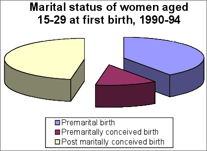

Chartjunk
Resist the temptation to 'enhance' pie charts with chartjunk. In particular, 3-dimensional pie charts can over-emphasise the categories closest to the viewer.

In general, it is better to draw a standard pie chart smaller rather than embellishing it with chartjunk.